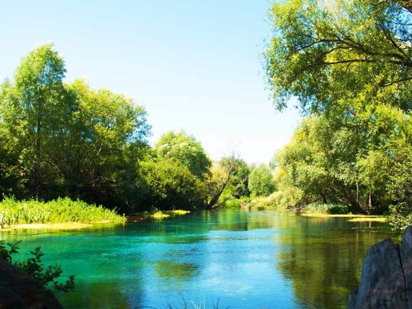
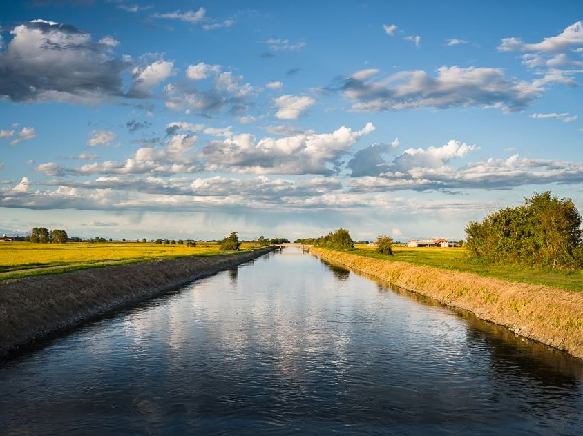
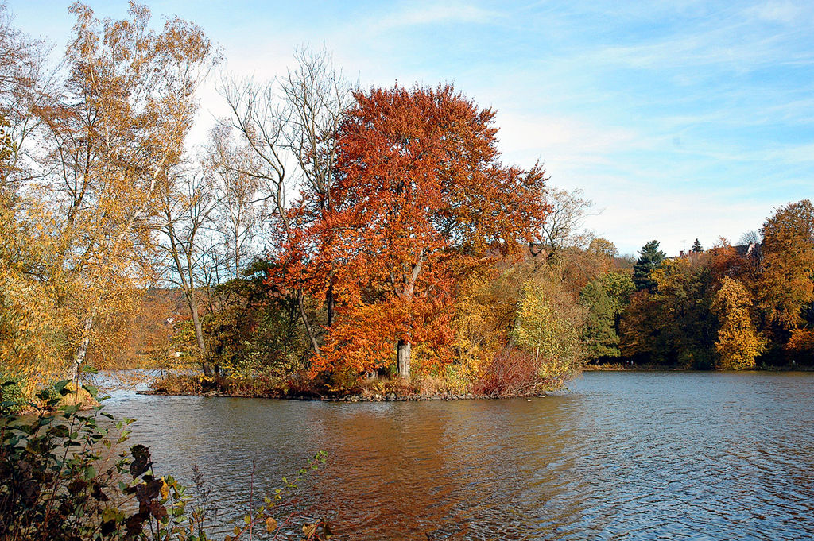

Le specie ittiche che popolano le acque interne della provincia di Latina sono molteplici. In questa pagina web ne riportiamo solo alcune.
Le attivita' antropiche hanno causato vari problemi alla fauna locale; sono state le specie autoctone a risentirne in particolar modo. La pesca non controllata, l'inquinamento delle acque e la realizzazzione di manufatti hanno causato un vero e proprio disastro ecologico.
Di seguito sono riportate le acque interne della provincia di Latina e le specie ittiche che le popolano:
| Itinerario | Tipologia | Specie | Img |
|---|---|---|---|
| Ufente | Fiume | Squalius cephalus Cyprinus carpio Tinca tinca Alburnus arborella |
 |
| Selcella | Canale | Cyprinus carpio Ameiurus melas Micropterus salmoides |
 |
| Gricilli | Lago | Cyprinus carpio Ameiurus melas Tinca tinca |
 |
L'introduzione delle specie alloctone ha causato non pochi problemi alla popolazione ittica indigena. L'estinzione di alcune specie autoctone è stata causata proprio da questo fattore.
Tra la fauna ittica non va data meno importanza agli organismi inferiori della catena alimentare. Bivalvi e gasteropodi hanno risentito notevolmente della riduzione degli organismi fotosintetici, causata dall'inquinamento delle acque.
{kind=link}
{kind=link}
{kind=link}